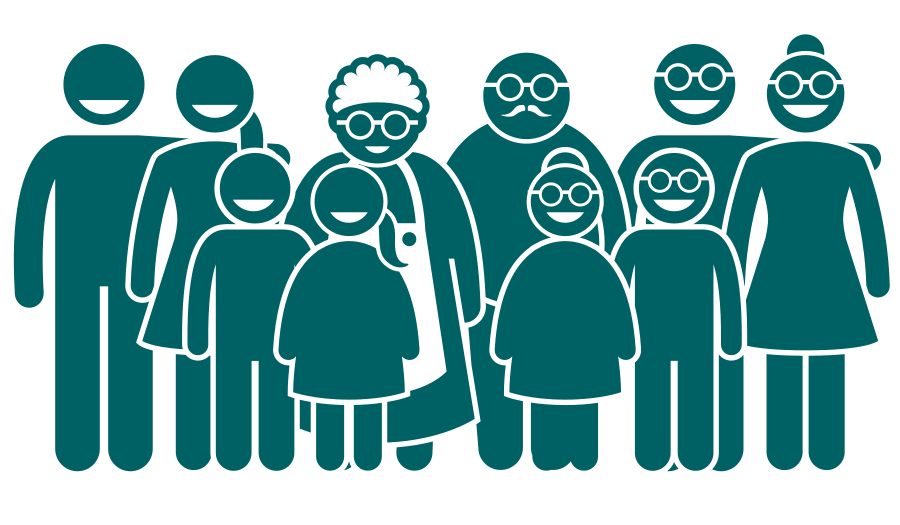

Home
About me
Inclusive development
Mental health tools
Settings
Hello!
My name is Oli and I want to make web apps that are awesome for everyone.
This is my application website for the Founders and Coders programme.
